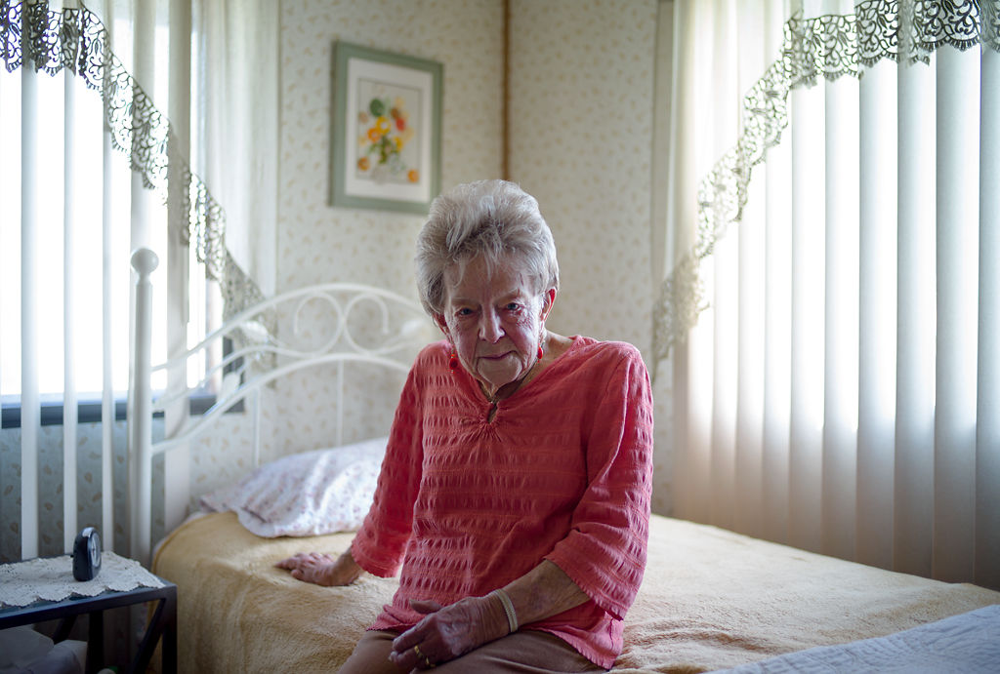

Shirley Colby, sitting in her bedroom on March 22, 2019, is a Columbia resident living in the Stonegate Mobile Home Community. "This is a nice place to live, but they keep raising the rent so I might not stay here," she said.
Shirley Colby, 93
On a sunny spring afternoon in Northeast Columbia, Shirley Colby nestled her hand into an oversized pair of gloves, slipped on rubber sandals — red, worn in — and readied her shovel. There she was, on one of the first unforgivingly steamy days of April tending to the garden beside her home.
As a young girl and her brother walked home from school, Shirley perked up and hollered. “Hi there,” Shirley said, persisting her weed pulling.
Shirley is a neighborhood-described “hoot” in Stonegate Mobile Home Community, where she's lived for years. She zooms around town, driving herself, volunteering daily and serving the Columbia community.
Oh, and she’s 93 years old.
“Well, I just hope I have a few more years,” she said. “I'm not quite ready and I have things to do.”
When the nest emptied, Shirley says her restless inclinations restored from memory, previously supplanted by motherhood and marriage. Shirley says she must stay active to combat her loneliness. “It all makes me get up in the morning, get dressed and get moving,” she said. “I don’t want to be a couch bum.”
Whether it's volunteering Mondays and Fridays at Boone Hospital, helping at Columbia’s Senior Center on Tuesdays and Thursdays, going to bible study on Wednesdays and church on Sundays, she constantly keeps busy. “Everybody’s always saying I work too much, or volunteer too much, but that’s just silly. I’ve worked all my life, so it’s just my way of living by now.”
Equally important to Shirley is her sense of community. “It makes me feel wonderful to drive and do things with people.” Shirley is a member of two gardening organizations and coordinates a monthly birthday club with a dozen other women. “We just get together, eat and read our cards,” she said. “It’s great to see everyone.”
“I just feel very lucky that even at my age I can still do it. A lot of people are surprised of that, I’m sure. I really am,” said Shirley, who is barely 5-foot tall and walks with no assistance.
Shirley has always been busy. As a mother and wife, she has lived in California, Arizona and Missouri and worked along the way. With inconsistent, bumpy support from her first and second husband, she says she was the rock for her three children. “I went to to work, did housework and was home to make dinner,” she said. “I wish my family would have stayed closer together, but it worked.”
As time passed Shirley says she has become known for her resilience and active lifestyle.“You know that Shirley, she’s a Rockstar,” longtime friend, Kay Henderson said. Shirley’s response? “I just make a day at a time, hope I have a tomorrow,” she said with a chuckle.
After a quick check of the day’s mail, Shirley Colby, right, calls to her cat and only living-companion Patches. “Patches sits at the window and waits for me to come home everyday,” Colby said. “But she is sneaky one, so shut that door tight.”
Shirley Colby and her gardening friends enjoy homemade baked goods for dessert after a celebratory meal at Bob Evans on April 20, 2019 in Northeast Columbia. The group of women who call themselves “The Birthday Club,” meet once every month to celebrate the most recent birthdays and catch up. “There used to be more of us, but that’s alright — it’s still great to get together,” Colby said with a chuckle.